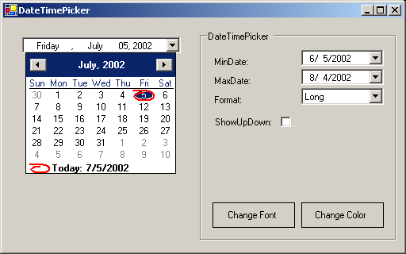

| Eiffel ENViSioN! | |
| Date Time Picker Sample | Load in Eiffel ENViSioN! |

RunningAfter launching the application, you will see a window displayed with a similar appearance to the one above. On the left side of the main window a date is displayed in a WINFORMS_COMBO_BOX. Click on this WINFORMS_COMBO_BOX and a WINFORMS_DATE_TIME_PICKER control appears that shows the same date than in the WINFORMS_COMBO_BOX. On the right side of the main window are the commands to control the format of the displayed date and the style of the WINFORMS_DATE_TIME_PICKER control. Click on the "Change font" button and a change font dialog box appears. Click on the "Change color" button and a dialog box appears that permits to customize the color appearance of the calendar through a color dialog box. Under the HoodThis application uses several different controls, and shows how to setup the WINFORMS_DATE_TIME_PICKER control using WINFORMS_FONT_DIALOG and WINFORMS_COLOR_DIALOG. When one of the buttons "Change font" or "Change color" is pressed, an event is triggered and the handler opens the corresponding dialog box. When the entry in the WINFORMS_COMBO_BOX format change, an event is triggered and the handler modifies the format of the displayed date. This sample uses the following classes:
Note: This sample is translated from the example located in the QuickStart\winforms\samples\ControlReference\DateTimePicker subdirectory of the .NET Framework SDK samples directory of Microsoft Visual Studio .NET. |
| © 2003-2004 Eiffel Software. All rights reserved. |
{kind=link}
{kind=link}
{kind=link}